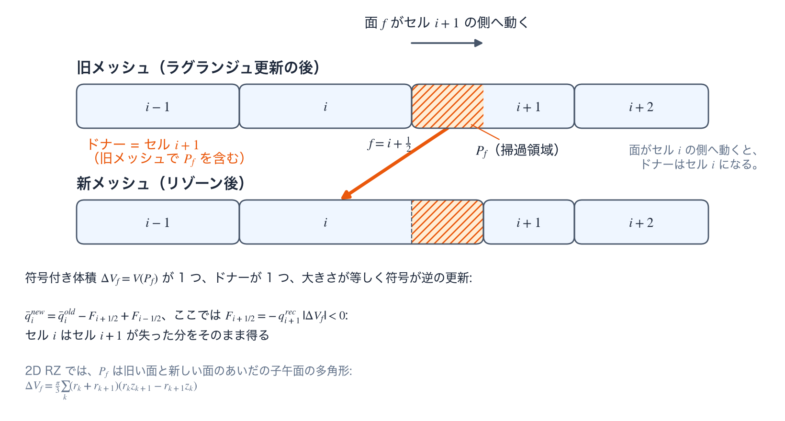

保存的リマップ
保存的リマップ（conservative remapping）は、同じ接続関係をもつ旧メッシュと新メッシュのあいだで、質量・運動量・内部エネルギー・輻射群エネルギーなどの示量量（extensive quantity）を、面ごとの符号付き掃過体積（signed swept volume）によって移す。既定の legacy_split は方向分離型で、明示的に有効化する ms2_moments は Margolin–Shashkov 型の 2 次モーメントリマップ（moment remap [1]）である。この頁は、掃過領域の体積と保存量の更新の式、ドナーの選択、制限関数、運動エネルギーの収支を閉じる処理を述べる。
掃過領域による保存的リマップ
掃過領域と、ドナーから受け取り側への転写を、1 次元の帯で図Aに示す。既定の legacy_split は、R 方向と Z 方向の掃引を交互の順序で実行する掃過領域リマップである。旧い面と新しい面が作る子午面（meridional plane）上の多角形 \(P_f\) を軸まわりに回転して得られる（回転体、solid of revolution）符号付き体積は
である。ここで \((r_k,z_k)\) は新旧の面のあいだで掃過される子午面多角形 \(P_f\) の頂点、係数 \(\pi/3\) は軸まわりの厳密な回転体化に由来する。内部の面ひとつについてドナーと流束を一度だけ決め、隣り合う 2 つのセルへ大きさが等しく符号が逆になるように適用する。保存量のセル積分 \(\bar q=qV\) は
$$ \bar q_i^{new}=\bar q_i^{old}-F_{i+1/2}+F_{i-1/2} $$で更新される（\(F_{i\pm1/2}\) はセル \(i\) の両面を通る保存量の流束で、ドナー側の再構成状態と掃過体積から評価する）。転写の対象は、質量、R/Z 方向運動量、電子・イオンの内部エネルギー、物質体積、および輻射群ごとのエネルギーである。密度は \(m^{new}/V^{new}\)、速度はリマップ後の運動量を質量で割った値、比エネルギーはリマップ後の示量エネルギーを質量で割った値として復元する。リマップは、\(\rho\)、\(\mathbf u\)、\(e\) のような示強量をそのまま平均するのではなく、先に保存量の積分を運ぶ。
- 符号付き掃過領域 \(P_f\): 符号は面が動いた向きを表し、絶対値はその面を横切って受け渡される体積である。
- ドナーの選択: 掃過体積の符号が風上（upwind）側の供給セルを決め、同じセルが、その面ひとつ分の流束に使う再構成状態を供給する。
- MS2 制限関数: 制限を課した線形再構成は単調 2 次精度であり、リマップによって新たな局所的極値が生じることを防ぐ。
- 厳密な RZ 幾何: 多角形の回転体として掃過体積を評価し、MS2 では掃過多角形の 1 次モーメント（first moment）も厳密に求める。軸近傍を 1 次近似で済ませることはしない。
- 運動エネルギーの収支:
ke_conservation_closureは、診断量と整合する形で、運動エネルギーのリマップと射影の差を物質の内部エネルギーへ繰り入れる。 - コーナー質量の更新時期: コーナー質量はラグランジュ運動中も、棄却された提案の下でも不変であり、受理された保存的リマップの後にだけ再構築される。
- 発動指標: 実行間隔、セル品質、軸マージン、コーナーヤコビアンが、幾何の取引を試みるかどうかを決める。

MS2 制限関数と運動エネルギーの収支
明示的に有効化する ms2_moments は、Margolin–Shashkov 型の 2 次モーメントリマップである。隣接 4 セルの最小二乗勾配（least-squares gradient）から \(q(\mathbf x)=q_L+\nabla q_L\cdot(\mathbf x-\mathbf x_L)\) を再構成し、van_leer または barth_jespersen で新たな局所極値を抑える。掃過多角形の厳密な 1 次モーメント \(M_1(P_f)\) を使うドナー積分は
（\(|P_f|\) は掃過多角形 \(P_f\) の回転体体積であり、\(\Delta V_f\) と同じ量である。）従来の分離型でも MS2 でも、同一の面流束を両側に符号を反転して用いるため、制限関数が 2 セル間の保存を壊すことはない。掃引ごとの質量・内部エネルギー・輻射エネルギーの正値性と、最後の EOS（equation of state、状態方程式）による再クロージャは、この 2 セル間の保存とは別の判定である。
セルの運動量を節点速度へ戻す射影は、一般には運動エネルギーを厳密には保存しない。既定オンの ke_fixup は従来のデッキ（deck。定義）との互換のために受理される制御であり、射影後の運動エネルギー欠損を実際に扱うのは次の ke_conservation_closure である。ke_conservation_closure は、コーナー質量と節点速度で測った \(q_K=K_c^{diag}/V_c\) を同じリマップ機構で運び（その結果が \(K_c^{remap,*}\)）、射影後の \(K_c^{node,*}\) との差 \(\Delta I_c=K_c^{remap,*}-K_c^{node,*}\) を物質の内部エネルギーへ繰り入れる（1 温度ではその内部エネルギーへ全量、2 温度ではイオンへ全量）。これを読むのは単一ブロックの ALE 段だけ（2D_RZ の単一ブロックのメッシュで ALE が有効、恒等モードでなく、帯 ALE なしか再配置と合成する構成）で、そこでは 1 温度で既定オフ、2 温度で既定オン（明示的な False は従い、警告を出す）。この処理がないと、リマップと節点への射影が運動エネルギーを変え、その変化がイオンに戻らないためである。正値性の再分配オプションは、内部エネルギーを負にしてしまう不足分を全体の余力から補い、補いきれない残差は収支表に明示する。
namelist による制御
以下は Numerics.ale の主要キーの抜粋である。全項目と検証規則は namelist リファレンスを参照のこと。
| キー | 既定値 | 用途 |
|---|---|---|
remap_scheme | "legacy_split" | 方向分離型の掃過領域リマップ。明示指定で "ms2_moments"。 |
remap_limiter | "van_leer" | 従来の分離型リマップにおけるドナー再構成の制限関数。 |
ke_fixup | True | リマップ後の運動エネルギー補正（従来実装との互換のための制御）。 |
検証
- リマップの保存収支は、質量、R/Z 方向運動量、物質内部エネルギー、輻射群エネルギーと、明示的な下限・再分配項の閉じ方を追跡する。一般のリマップに対する質量の判定基準は相対誤差 \(\le 10^{-14}\) である。管理型軸帯の単体検査は、質量・内部エネルギー・輻射エネルギーに \(10^{-12}\)、一様な並進のときの運動エネルギーと全エネルギーの変化に \(10^{-14}\) を用いる。実行時は、質量、輻射エネルギー（帯に輻射エネルギーがあるとき）、セル運動量、節点運動量の残差が \(10^{-8}\) を超えたとき、または帯の全エネルギー（内部エネルギーと運動エネルギーの和）の残差が \(\min(10^{-10},\,2\times10^{-16}\sqrt{B})\)（\(B\) は帯のセル数）を超えたときに巻き戻す。
参考文献
- L. G. Margolin and M. J. Shashkov, "Second-Order Sign-Preserving Conservative Interpolation (Remapping) on General Grids," J. Comput. Phys. 184, 266–298 (2003). doi:10.1016/S0021-9991(02)00033-5